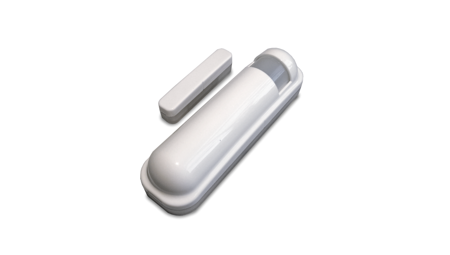
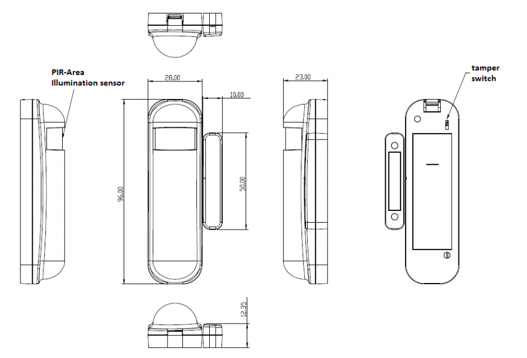

PHI_PSM02
Firmware Version : 1.0 |
 |
Quick Start
S This device is a Z-Wave Sensor. Tripple Click the Temper Switch on the backside to confirm inclusion, exclusion and association.
Please refer to the chapters below for detailed information about all aspects of the products usage.
What is Z-Wave?
This device is equipped with wireless communication complying to the Z-Wave standard. Z-Wave is the international standard for wireless communication in smart homes and buildings. It is using the frequency of 868.42 MHz to realize a very stable and secure communication. Each message is reconfirmed (two-way communication) and every mains powered node can act as a repeater for other nodes (meshed network) in case the receiver is not in direct wireless range of the transmitter.
Z-Wave differentiates between Controllers and Slaves. Slaves are either sensors (S) transmitting metered or measured data or actuators (A) capable to execute an action. Controllers are either static mains powered controllers (C) also referred to as gateways or mobile battery operated remote controls (R). This results in a number of possible communication patterns within a Z-Wave network that are partly or completely supported by a specific device.

- Controllers control actuators
- Actuators report change of status back to controller
- Sensors report change of status of measured values to controller
- Sensors directly control actuators
- Actuators control other actuators
- Remote controls send signals to static controllers to trigger scenes or other actions
- Remote controls control other actuators.
There are two different role a controller can have. There is always one single primary controller that is managing the network and including/excluding devices. The controller may have other functions - like control buttons - as well. All other controllers don't manage the network itself but can control other devices. They are called secondary controllers. The image also shows that its not possible to operate a sensor just from a remote control. Sensors only communicate with static controllers.
Product description
The Z-Wave 4 in 1 Sensor is designed with three detection sensors:
- Door-/Window
- PIR/Motion
- Temperature
- Illumination
The Philio Multi Sensor is a Z-Wave door/ window sensor, motion sensor, lighting sensor and temperature sensor in one package. Thanks to this the PSM02 can be uses as a security device or home automation device, e.g. to send an alarm when a motion is detected, turn the light on/ off automatically at night or to adjust the heater.
The product consists of two elements - the detector and the magnet. The magnet is mounted on the moving part of the window or of the door. The other part is placed on the frame.
Batteries
The unit is operated by batteries. Use only batteries of correct type. Never mix old and new batteries in the same device. Used batteries contain hazardous substances and should not be disposed of with household waste!
Battery Type: 1 * CR123A
Installation Guidelines

- Open the casing and dissemble the front part of the case.
- Put the included CR123A battery into the battery compartment and close the casing.
- The sensor consists of two parts; a Detector and a Magnet. They are designed to be fitted to doors or windows with the Magnet mounted on the opening part and the Detector mounted on the fixed frame. If used for motion detection mount the device at a wall at about 2 m above surface. To enhance operation place the device on a position which can detect the room widely. Mount the device with the included screws or the adhesive tape on a plane surface.
Behavior within the Z-Wave network
I On factory default the device does not belong to any Z-Wave network. The device needs to join an existing wireless network to communicate with the devices of this network. This process is called Inclusion. Devices can also leave a network. This process is called Exclusion. Both processes are initiated by the primary controller of the Z-Wave network. This controller will be turned into exclusion respective inclusion mode. Please refer to your primary controllers manual on how to turn your controller into inclusion or exclusion mode. Only if the primary controller is in inclusion or exclusion mode, this device can join or leave the network. Leaving the network - i.e. being excluded - sets the device back to factory default.
If the device already belongs to a network, follow the exclusion process before including it in your network. Otherwise inclusion of this device will fail. If the controller being included was a primary controller, it has to be reset first.
Tripple Click the Temper Switch on the backside confirms inclusion and exclusion.
Operating the device
The detector can be used as a security device or home automation device. When the detector is cooperated with security appliances, the (1) Door/window or (2) PIR sensor act as an alarm detector. Alternatively, when the detector is worked with Z-Wave controller, the detector can be set to perform the role of home automation device by detecting both changes in PIR motion detect or door/window open close signal with percentage of illumination lux levels.
One home automation scenario is, once night falls, the percentage of ambient illumination is lower than preset value. If a person moves within or across the devices field of vision, a trigger radio signal will be transmitted so as to turn connected lightings for better illumination.
Another scenario is to combine (1) Door/window (2) PIR (3) illumination sensors to recognize people is coming in or going out and turn the light on/off automatically.
The temperature sensor can detect the environment temperature so as to adjust heater or cooler to achieve preset temperature or detect the abnormal environment temperature (like freeze sensor or fire sensor) to send the warning message.
After powering up the divice needs several minutes to setup and work properly.
The device has a tamper switch, which starts alarm when the device is forcibly removed.
Node Information Frame
NI The Node Information Frame is the business card of a Z-Wave device. It contains information about the device type and the technical capabilities. The inclusion and exclusion of the device is confirmed by sending out a Node Information Frame. Beside this it may be needed for certain network operations to send out a Node Information Frame.
Tripple Click the Temper Switch on the backside sends out a Node Information Frame.
Associations
A Z-Wave devices control other Z-Wave devices. The relationship between one device controlling another device is called association. In order to control a different device, the controlling device needs to maintain a list of devices that will receive controlling commands. These lists are called association groups and they are always related to certain events (e.g. button pressed, sensor triggers, ...). In case the event happens all devices stored in the respective association group will receive a common wireless command.
Association Groups:
| 1 | group 1 is for receiving the report message, like triggered event, temperature, illumination etc. (max. nodes in group: 7) |
| 2 | group 2 is for light control, the device will send the “Basic Set” command to this group. (max. nodes in group: 7) |
Configuration Parameters
Z-Wave products are supposed to work out of the box after inclusion, however certain configuration can adapt the function better to user needs or unlock further enhanced features.
IMPORTANT: Controllers may only allow to configure signed values. In order to set values in the range 128 … 255 the value sent in the application shall be the desired value minus 256. For example: to set a parameter to 200 it may be needed to set a value of 200 minus 256 = minus 56. In case of two byte value the same logic applies: Values greater than 32768 may needed to be given as negative values too.
| Value | Description |
|---|---|
| 255 | 0xFF(-1) turns on the light. (Default) |
| 1 — 100 | For dimmers 1 to 100 means the light strength |
| Value | Description |
|---|---|
| 0 | 0 means disable the PIR motion; |
| 1 — 99 | 1 means the lowest sensitivity, 99 means the highest sensitivity (Default 70) |
| Value | Description |
|---|---|
| 0 | 0 means turn off illumination detected function And never turn on the light. |
| 0 — 100 | 1 means darkest. 99 means brightest. 100 means turn off illumination detected function. And always turn on the light (Default 99) |
| Value | Description |
|---|---|
| 0 — 127 | Bit 0: 1 means security mode; 0 means home automation mode. Bit 1: 1 means enable test mode; 0 means disable test mode. Notice: Bit0 and Bit1 will effect when the DIP Switch setting to program mode. If Bit1 is enabled, the Bit0 is useless. Bit 2: Disable the door/window function. Bit 3: Setting the temperature scale. 0: Fahrenheit, 1:Celsius Bit 4: Disable illumination report after event triggered. Bit 5: Disable temperature report after event triggered (Default 0) |
| Value | Description |
|---|---|
| 0 — 127 | Bit 0: Disable magnetic integrate illumination. Bit 1: Disable PIR integrate Illumination. Bit 2: Disable magnetic integrate PIR (Default is Disable) Bit 3: When Bit2 is 0 (Enable), the device is install in the same room with the light? 0: In the same room(Default), 1: In the different room. Bit 4: Disable delay 5 seconds to turn off the light, when door/window closed. Bit 5: Disable auto turn off the light, after door/window opened to turn on the light. Notice: If bit2 is zero, this setting is useless. Bit 6:Enable temperature monitoring. When this bit enable, the temperature changed 3 degree Fahrenheit, it will report. And also the temperature over 140 degree Fahrenheit, it will report every 64 seconds. (Default 4) |
| Value | Description |
|---|---|
| 3 — 127 | 8 seconds per tick, and minimum time is 24 seconds, default tick is 3 (24 seconds). (Default 3) |
| Value | Description |
|---|---|
| 4 — 127 | 8 seconds per tick, and minimum time is 32 seconds, default tick is 4 (32 seconds) (Default 4) |
| Value | Description |
|---|---|
| 1 — 127 | 30 minutes per tick and minimum time is 30 minutes, default tick is 12 (6 hours) (Default 12) |
| Value | Description |
|---|---|
| 1 — 127 | 30 minutes per tick and minimum time is 30 minutes, default tick is 12 (6 hours) (Default 12) |
| Value | Description |
|---|---|
| 1 — 127 | 30 minutes per tick and minimum time is 30 minutes, default tick is 12 (6 hours) (Default 12) |
| Value | Description |
|---|---|
| 1 — 127 | 30 minutes per tick and minimum time is 30 minutes, default tick is 12 (6 hours) (Default 12) |
Command Classes
Supported Command Classes- Battery (version 1)
- Association (version 2)
- Configuration (version 1)
- Manufacturer Specific (version 2)
- Version (version 1)
- Binary Sensor (version 2)
- Multilevel Sensor (version 5)
- Wake Up (version 2)
- Basic (version 1)
Technical Data
| Battery Type | 1 * CR123A |
| Explorer Frame Support | No |
| SDK | |
| Device Type | Slave with routing capabilities |
| Generic Device Class | Binary Sensor |
| Specific Device Class | Routing Binary Sensor |
| Routing | No |
| FLiRS | No |
| Firmware Version | 1.0 |
Explanation of Z-Wave specific terms
- Controller — is a Z-Wave device with capabilities to manage the network. Controllers are typically Gateways, Remote Controls or battery operated wall controllers.
- Slave — is a Z-Wave device without capabilities to manage the network. Slaves can be sensors, actuators and even remote controls.
- Primary Controller — is the central organizer of the network. It must be a controller. There can be only one primary controller in a Z-Wave network.
- Inclusion — is the process of bringing new Z-Wave devices into a network.
- Exclusion — is the process of removing Z-Wave devices from the network.
- Association — is a control relationship between a controlling device and a controlled device.
- Wakeup Notification — is a special wireless message issued by a Z-Wave device to annonces that is is able to communicate.
- Node Information Frame — is a special wireless message issued by a Z_Wave device to announce its capabilities and functions.
Disposal Guidelines
The product contains batteries. Please remove the batteries when the device is not used.
Do not dispose of electrical appliances as unsorted municipal waste, use separate collection facilities. Contact your local government for information regarding the collection systems available. If electrical appliances are disposed of in landfills or dumps, hazardous substances can leak into the groundwater and get into the food chain, damaging your health and well-being.